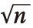

在很多方面，我们都一样。除去个人怪癖不谈，很少有人会拒绝体验真实、浪漫的爱情。不论以何种方式体现，对长久幸福的个人追求把我们联系在了一起。学会如何吸引并留住梦中情人是这一使命的重要一环——我们稍后会讲到，然而若不先找到一个施展爱意的对象，一切便毫无意义。
不论单身多久，找到适合你的人这件事有时就像是一个无法征服的挑战。数年内交往了几个无聊的伯纳德和疯狂的苏西之后，我们便会感觉到困惑、失望，似乎好运总是与我们擦肩而过。而有些人会告诉你，你的感觉并不一定没有道理。实际上，长期单身的数学家彼得·巴克斯甚至在2010年时计算过，银河系中拥有智慧生物的外星文明数量比可与他交往的潜在女友还要多。
然而实际情况并没有那么糟糕。毕竟地球上有70亿人，然而他们不都与我们投缘，本章会描述我们如何运用巴克斯的方法计算出找到另一半的概率，还会特别解释为何减少对潜在伴侣的条件限制能增加你在自己的星球上找到另一半的概率。
在巴克斯所著的《我为什么没有女朋友》（Why I Don't Have a Girlfriend）的文章中，他对科学家用来论证外星人为何尚未登陆地球的公式做了改动，从而计算出符合他择偶要求的女性有多少。
巴克斯所用的公式是以它的创立者弗兰克·德雷克命名的。公式原本用来计算银河系中外星智慧生命形态的数量。方法很简单：德雷克把问题进行了分解，探索了银河系中恒星形成的平均速度，拥有行星环绕的恒星的占比，支持生命的行星占比，以及具有技术发展潜力、凭借该技术可向太空发送其存在的可探测信号的文明占比。
德雷克施展了一个科学家们熟识的戏法，他没有做一个宏观的推测，而是细分成了一系列有根据的小推测。得出的估算结果很可能与真相惊人地接近，因为每个小推测中的误差往往会相互抵消。[1]根据每个步骤中选择的数值（最后几步还存在争议），科学家目前认为银河系中大约有一万个外星智慧文明。这不是科幻片：科学家们已经确信外星生命的存在了。
当然，就如无法精确计算外星生命形态的数量一样，我们也不可能准确计算出你有几个潜在对象。尽管如此，能够估算出无法被证明的数量是每个科学家都需要掌握的重要技能。这种被称为“费米估算法”的技能适用于任何领域，不论是量子力学还是诸如谷歌公司脑筋急转弯式的面试题。
它同样适用于彼得·巴克斯的探索：世上究竟有没有适合与他交往的高层次智慧女性？概念是相同的：把问题不停细化、分解，直到可以做出有根据的猜测为止。巴克斯列出的条件如下：
1. 住在我附近的女性有多少？（伦敦：400万）
2. 多少人有可能年龄上适合？（20%:80万）
3. 多少人有可能是单身？（50%:40万）
4. 多少人有可能拥有大学文凭？（26%:104 000）
5. 多少人有可能有魅力？（5%:5 200）
6. 多少人有可能觉得我有魅力？（5%:260）
7. 多少人有可能和我合得来？（10%:26）
到最后，他愿意交往的女人，全世界只有26个。
这么说吧，外星智慧文明的数量大约是彼得·巴克斯的潜在配偶数量的400倍。
我个人认为巴克斯有些吹毛求疵。他其实是在说，每遇到十个女人，他只能和其中一个愉快地相处，而每二十个女人中，他觉得只有一个足够有魅力使他愿意与之交往。也就是说，他需要遇到两百个女人才能找到一个同时符合这两个要求的人，这还没有考虑到对方是否喜欢他。
我觉得条件还要放宽些。下列数据或许更合理：
1. 住在我附近的性别合适的人有多少？（伦敦：400万女性）
2. 多少人有可能年龄上适合？（20%:80万）
3. 多少人有可能是单身？（50%:40万）
4. 多少人有可能拥有大学文凭？（26%:104 000）
5. 多少人有可能有魅力？（20%:20 800）
6. 多少人有可能觉得我有魅力？（20%:4 160）
7. 多少人有可能和我合得来？（20%:832）
这样一个城市中就有将近1 000个潜在伴侣。在我看来，这个数据比较合理。
不过还有一个问题。
巴克斯若能稍微降低标准就能发现更多潜在伴侣。其实如果他能不那么在意未来伴侣是否拥有大学学历，他的潜在伴侣数量将会是现在的四倍。如果他愿意把范围拓展到伦敦以外，人选会更多。
不过奇怪的是，恰恰相反，单身人士往往并没有敞开心扉迎接所有潜在伴侣。我最近听说了一位对自己未来伴侣的要求无比清晰的男士，他在OkCupid交友网站上填写了个人资料，其中包括“不能接受的原则性问题”一项，即在任何情况下都无法容忍的事。他列出了一百多条，内容之极端，以致这件事在BuzzFeed网站上变成了热门话题。在“请不要联系我，如果……”一栏下，他写下了如下极品之语：
1. 你在不必要的情况下打死蜘蛛。
2. 你某处的文身必须照镜子才看得到。
3. 你在现实世界讨论脸谱网。
4. 你认为自己是个快乐的人。
5. 你真的把世界和平当作目标。
即便你有理由把未来伴侣限定为爱蜘蛛、无文身、厌恶和平的人，不幸的是，设限越多就会越难找到爱情，因为你若把如此庞大的条件列表植入巴克斯的公式里——即便是植入我的公式版本里——得到的结果将会接近于零。
当然，我们每个人说起爱都有“必备”和“必无”的条件限制。然而如此庞大的列表也的确引发了一个有趣的问题。我们先入为主的种种条件究竟是如何降低择偶成功率的呢？
现实中，单身人士择偶时总是会附加很多“必备”和“必无”的条件，这大大降低了找到另一半的概率。我的一位密友仅因一位男士穿蓝色牛仔裤配黑鞋赴约就结束了一段有可能开花结果的关系。我还有位好友，他拒绝和使用叹号的女士交往！（这个叹号就是送给他的。）我们每个人又何尝不是只愿和够上进、够迷人或是够富有的人交往呢？
纸面上看似优秀从长远来看并无实际意义。没有必要限定对方要符合你的所有条件，因为这只会带给自己艰巨的挑战。选几个着实重要的条件，给别人一个机会，你或许会收获惊喜。
实际上，我们或许都认识一些人，他们最终都和从前未曾想过会和自己交往的人走到了一起——哪怕那个人是地球上最后一个生命形态。毕竟就如欢乐梅姑所说的：“生活是一场盛宴，而大多数可怜的家伙都快饿死了！”
问问彼得·巴克斯就知道了。他战胜了小概率，去年结婚了。
[1] 把问题分解后，估量便类似布朗运动。在具有n个步骤的估量中，误差会像

一样被分散。